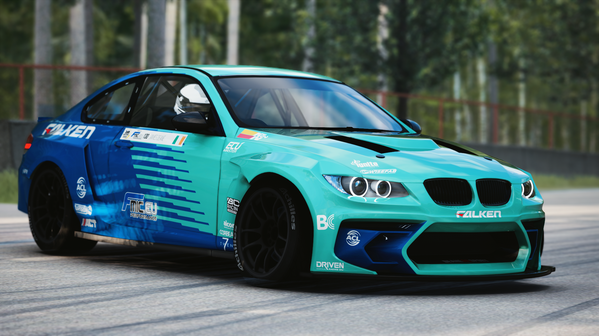

Členové našeho týmu
Antonín Světluška
Antoním je s námi nejkratší dobu. Svou licenci na hodnocení závodů získal minulý rok. Je to nováček, co se rád učí a je až moc přátelský a precizní. Bohužel nemá nemá žádné auto. Nejen ve virtuálním světe ale i v tom reálném. Hodlá to ale na příští rok napravit.
Bořek Mlátička
Bořek je s námi nejdelší dobu. jezdíme s ním už několik let. V minulosti se umístil jako třetí ve VDC a chtěl zkusit závodit i mimo počítač. V reálu mu to ale tolik nešlo tak se dal na hodnocení závodů. Jeho Nissan Silvia S15 pro VDC používá hodně zastaralý model vozu ale i pneumatik tudíž ho už nepoužívá.

Roland Von Brno
Jméno sice zvláštní o to možná divnější, že Roland je ve skutečnosti slovák. Stejně jako Bořek se zůčastnil spousty virtuálních závodů ale nikdy se mu nepovedlo umístit se líp jak top 16, proto se rozhodl, že se stane rozhodčím. Tenhle člověk má obrovské ale opravdu obrovské znalosti aut a tratí. Je neuvěřitelně precizní takže na Rolanda pozor. Né vždy Vám musí dát hodně bodů. Používá vůz BMW E92 Eurofighter. Můžete ho potkat i v našich závodech. 
Martin Scheidel
Samotný tvůrce celého projektu CDDRIFT. Všechny ostatní členy objevil při závodech a má v nich svou plnou důvěru. Je také komentátorem našich závodů
a aktivně se jich pokud možno zůčastní. Momentálně využívá vozu Mazda RX-7 (první foto poslední sezóna cds a druhé foto aktuální stav vozu)